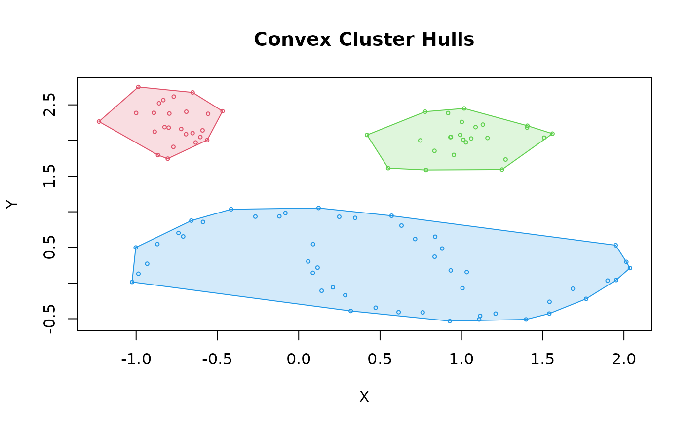
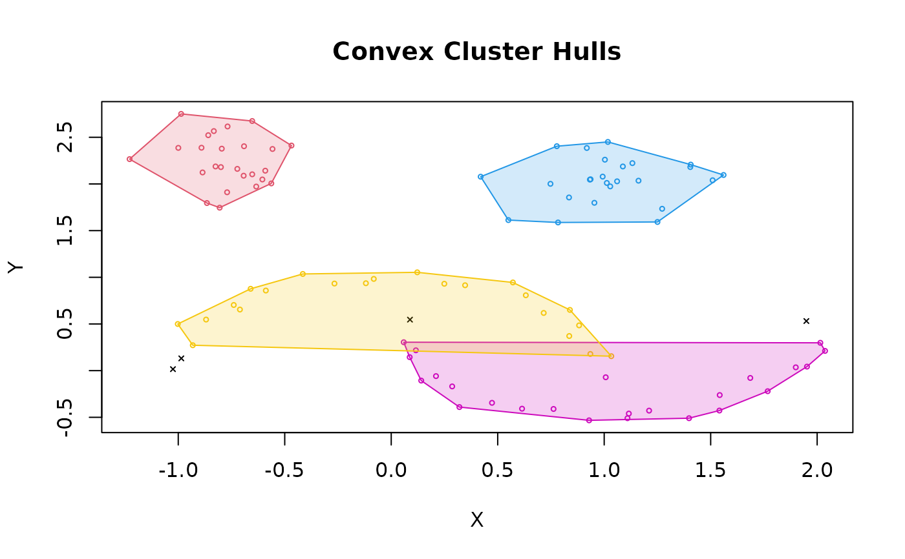
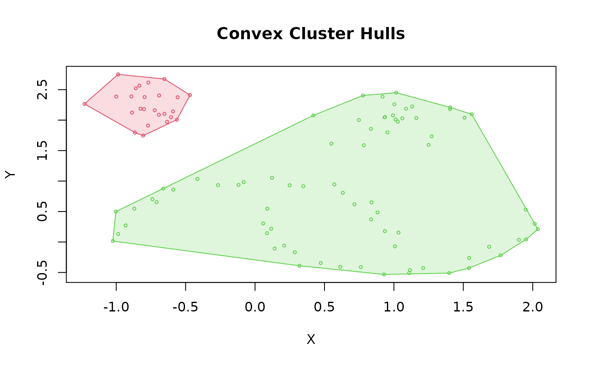

Framework for the Optimal Extraction of Clusters from Hierarchies
Source:R/extractFOSC.R
extractFOSC.RdGeneric reimplementation of the Framework for Optimal Selection of Clusters (FOSC; Campello et al, 2013) to extract clusterings from hierarchical clustering (i.e., hclust objects). Can be parameterized to perform unsupervised cluster extraction through a stability-based measure, or semisupervised cluster extraction through either a constraint-based extraction (with a stability-based tiebreaker) or a mixed (weighted) constraint and stability-based objective extraction.
Usage
extractFOSC(
x,
constraints,
alpha = 0,
minPts = NULL,
prune_unstable = FALSE,
validate_constraints = FALSE,
cluster_selection_epsilon = 0
)Arguments
- x
a valid hclust object created via
hclust()or the result ofhdbscan(). For anhdbscan()result, its hierarchy (thehccomponent) is used.- constraints
Pairwise constraints given as a list, a vector (like a dist object) or a matrix. If missing, an unsupervised measure of stability is used to make local cuts and extract the optimal clusters. See details.
- alpha
numeric; weight between \([0, 1]\) for mixed-objective semi-supervised extraction. Defaults to 0.
- minPts
integer; minimum cluster size to extract (must be at least 2). The default value of
NULLuses for anxthat was created byhdbscan()its storedminPtsvalue, otherwise 2 is used.- prune_unstable
logical; should significantly unstable subtrees be pruned? The default is
FALSEfor the original optimal extraction framework (see Campello et al, 2013). See details for whatTRUEimplies.- validate_constraints
logical; should constraints be checked for validity? See details for what are considered valid constraints.
- cluster_selection_epsilon
double; a distance threshold below which no clusters should be selected (see Malzer & Baum 2020, and
hdbscan()). The default of 0.0 means this feature is not used.
Value
A list with the elements:
- cluster
A integer vector with cluster assignments. Zero indicates noise points (if any). The cluster ids are the ids of the clusters in the simplified cluster tree and are therefore not necessarily consecutive.
- hc
The original hclust object with additional list elements
"cluster"(the id of the cluster assigned to each of the \(n - 1\) merge steps),"stability","constraint", and"total"for the \(n - 1\) cluster-wide objective scores from the extraction.
Details
Campello et al (2013) suggested a Framework for Optimal Selection of
Clusters (FOSC) as a framework to make local (non-horizontal) cuts to any
cluster tree hierarchy. This function implements the original extraction
algorithms as described by the framework for hclust objects. Traditional
cluster extraction methods from hierarchical representations (such as
hclust objects) generally rely on global parameters or cutting values
which are used to partition a cluster hierarchy into a set of disjoint, flat
clusters. This is implemented in R in function stats::cutree().
Although such methods are widespread, using global parameter
settings are inherently limited in that they cannot capture patterns within
the cluster hierarchy at varying local levels of granularity.
The role of minPts for condensing the clustering tree
Rather than partitioning a hierarchy based on the number of the cluster one
expects to find (\(k\)) or based on some linkage distance threshold
(\(H\)), the FOSC proposes that the optimal clusters may exist at varying
distance thresholds in the hierarchy. To enable this idea, FOSC uses the
minPts parameter. It represents the minimum number of points that
constitute a valid cluster. The first step of the FOSC algorithm is to
traverse the given cluster hierarchy divisively, recording new clusters at
each split if both branches represent more than or equal to minPts. Branches
that contain less than minPts points at one or both branches inherit the
parent clusters identity. Note that using FOSC, due to the constraint that
minPts must be greater than or equal to 2, points that leave a cluster in
a branch with fewer than minPts points are not part of any new cluster.
Depending on the local cuts chosen by the optimal solution, such points can
end up as noise, which is denoted as 0 in the final solution.
For a hierarchy created by hdbscan(), extractFOSC() recomputes the
stability on the raw hierarchy using minPts. By default, the minPts value
stored in the hierarchy is used, but a different value can be specified:
minPts in hdbscan() controls noise and density estimate smoothing,
while minPts in extractFOSC() controls the cluster scale.
Cluster extraction
The simplified cluster tree is then post-processed recursively to extract clusters that maximize for each cluster \(C_i\) the cost function
$$\max_{\delta_2, \dots, \delta_k} J = \sum\limits_{i=2}^{k} \delta_i S(C_i)$$ where \(S(C_i)\) is the stability-based measure as $$ S(C_i) = \sum_{x_j \in C_i}(\frac{1}{h_{min} (x_j, C_i)} - \frac{1}{h_{max} (C_i)}) $$
\(\delta_i\) represents an indicator function, which constrains
the solution space such that clusters must be disjoint (cannot assign more
than 1 label to each cluster). The measure \(S(C_i)\) used by FOSC
is an unsupervised validation measure based on the assumption that, if you
vary the linkage/distance threshold across all possible values, more
prominent clusters that survive over many threshold variations should be
considered as stronger candidates of the optimal solution. For this reason,
using this measure to detect clusters is referred to as an unsupervised,
stability-based extraction approach. In some cases it may be useful
to enact instance-level constraints that ensure the solution space
conforms to linkage expectations known a priori. This general idea of
using preliminary expectations to augment the clustering solution will be
referred to as semisupervised clustering. If constraints are given in
the call to extractFOSC(), the following alternative objective function
is maximized:
$$J = \frac{1}{2n_c}\sum\limits_{j=1}^n \gamma (x_j)$$
\(n_c\) is the total number of constraints given and \(\gamma(x_j)\) represents the number of constraints involving object \(x_j\) that are satisfied. In the case of ties (such as solutions where no constraints were given), the unsupervised solution is used as a tiebreaker. See Campello et al (2013) for more details.
To prioritize the degree at which the
unsupervised and semisupervised solutions contribute to the overall optimal
solution, the parameter \(\alpha\) can be set to enable the extraction of
clusters that maximize the mixed objective function
$$J = \alpha S(C_i) + (1 - \alpha) \gamma(C_i)$$
FOSC expects the pairwise constraints to be passed as either 1) an \(n(n-1)/2\) vector of integers representing the constraints, where 1 represents should-link, -1 represents should-not-link, and 0 represents no preference using the unsupervised solution (see below for examples). Alternatively, if only a few constraints are needed, a named list representing the (symmetric) adjacency list can be used, where the names correspond to indices of the points in the original data, and the values correspond to integer vectors of constraints (positive indices for should-link, negative indices for should-not-link). Again, see the examples section for a demonstration of this.
If validate_constraints is TRUE, the constraints are checked (and fixed)
for symmetry (if point A has a should-link constraint with point B, point B
should also have the same constraint). Asymmetric constraints are not
supported. The mixed objective function is used if alpha is greater than 0.
Unstable branch pruning
Unstable branch pruning was not discussed by Campello et al (2013), however
in some data sets it may be the case that specific subbranches scores are
significantly greater than sibling and parent branches, and thus sibling
branches should be considered as noise if their scores are cumulatively
lower than the parents. This can happen in extremely nonhomogeneous data
sets, where there exists locally very stable branches surrounded by unstable
branches that contain more than minPts points.
prune_unstable = TRUE will remove the unstable branches.
References
Campello, Ricardo JGB, Davoud Moulavi, Arthur Zimek, and Joerg Sander (2013). A framework for semi-supervised and unsupervised optimal extraction of clusters from hierarchies. Data Mining and Knowledge Discovery 27(3): 344-371. doi:10.1007/s10618-013-0311-4
See also
hclust(), hdbscan(), stats::cutree()
Other clustering functions:
dbscan(),
hdbscan(),
jpclust(),
ncluster(),
optics(),
sNNclust()
Other HDBSCAN functions:
glosh(),
hdbscan(),
mst_dist()
Examples
data("moons")
## Regular HDBSCAN using stability-based extraction (unsupervised)
cl <- hdbscan(moons, minPts = 5)
cl$cluster
#> [1] 3 3 3 3 3 3 3 3 3 3 3 3 3 3 3 3 3 3 3 3 3 3 3 3 3 3 3 3 3 3 3 3 3 3 3 3 3
#> [38] 3 3 3 3 3 3 3 3 3 3 3 3 3 2 2 1 1 1 1 1 2 2 1 2 2 2 1 1 2 1 1 1 2 1 1 2 2
#> [75] 2 1 2 1 2 2 1 2 2 1 1 2 2 1 2 2 1 2 2 2 1 1 1 2 1 1
hullplot(moons, cl)

## Semisupervised constraint-based extraction from the HDBSCAN hierarchy
## alpha = 0: clusters are chosen to satisfy as many constraints as possible,
## cluster stability only breaks ties.
## constraint: point 12 should link with 49, but not with 47
cl_con <- extractFOSC(cl$hc, minPts = 5,
constraints = list("12" = c(+49, -47)),
alpha = 0)
cl_con$cluster
#> [1] 6 5 5 5 5 6 5 6 6 5 6 0 6 6 5 5 5 5 5 5 5 6 5 6 5 5 6 6 6 5 6 0 5 6 6 6 5
#> [38] 5 0 6 6 6 5 6 5 6 5 6 0 5 3 3 1 1 1 1 1 3 3 1 3 3 3 1 1 3 1 1 1 3 1 1 3 3
#> [75] 3 1 3 1 3 3 1 3 3 1 1 3 3 1 3 3 1 3 3 3 1 1 1 3 1 1
hullplot(moons, cl_con)

## Semisupervised alternative formulation using constraints on distances
## constraint: +1: Link points with a distance < 0.1;
## -1: do not link points with distance > 1.0;
## 0: no preference for all other links.
dist_moons <- dist(moons)
cl_con2 <- extractFOSC(cl$hc, minPts = 5,
constraints = ifelse(dist_moons < 0.1, +1L,
ifelse(dist_moons > 1.0, -1L, 0L)),
alpha = 0)
hullplot(moons, cl_con)
## Unsupervised extraction with a distance threshold (HDBSCAN(e))
cl_dist <- extractFOSC(cl$hc, cluster_selection_epsilon = 1)
hullplot(moons, cl_dist)
